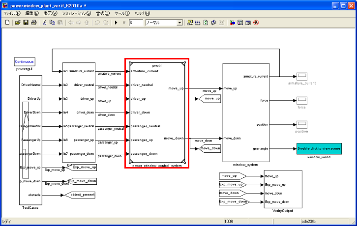
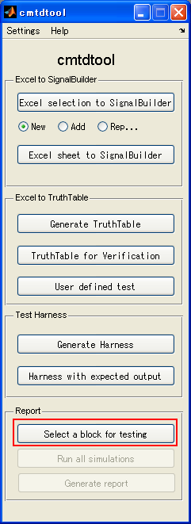
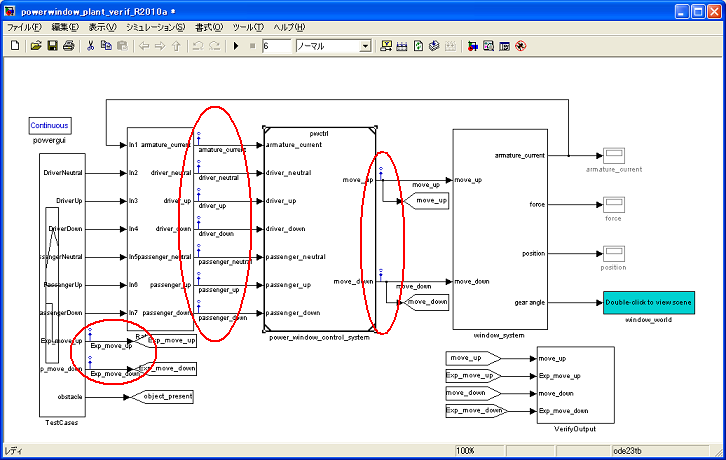
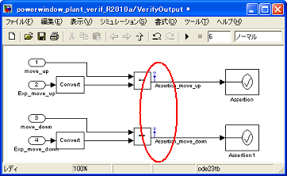
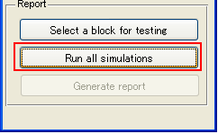
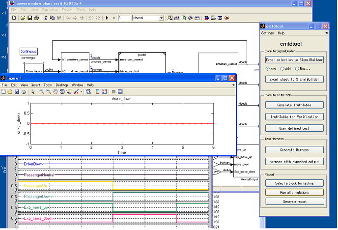
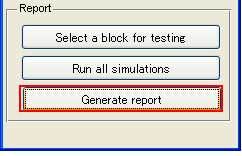
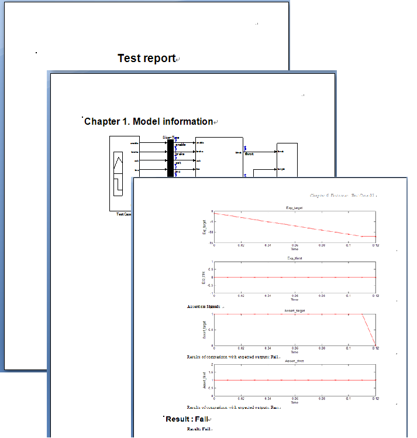
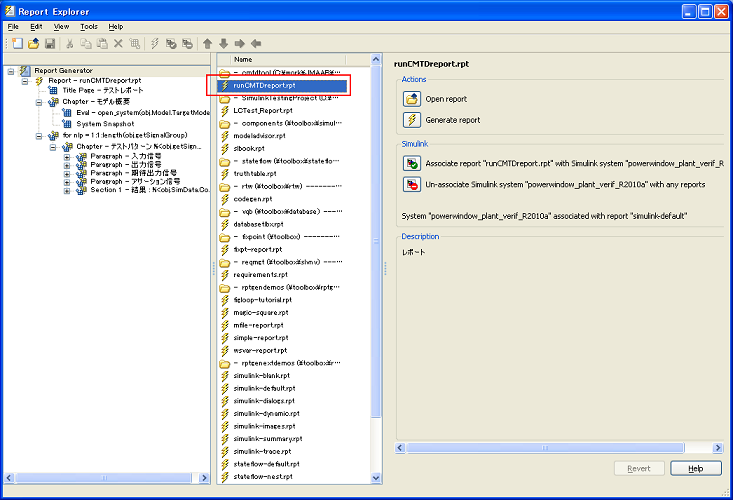

Automatic test report generation
- Supported by MATLAB R2008a or later
- Requires Simulink® Report Generator™ and MATLAB® Report Generator™.
Contents
Details
(1) Prerequisite Conditions
This automatic test report generation capability is available if the following conditions are satisfied:
- There is a SignalBuilder block where test vectors and expected outputs are given.
- There is a Subsystem (or Model Reference block) to be tested and all inputs and outputs of the block are scalar signals.
- The model contains signal(s) which evaluates model's behavior such as connecting the signal to Assertion block and if the signal becomes 0 (false) at least one simulation step during a simulation, the result of the evaluation means false.
(2) Specify signal name(s) for the following signals
- All signals of inputs and outputs of a Subsystem (or Model Reference block) to be tested.
- Signal names for expected output(s) whose names begin with Exp_.
- Signal names for assertion signal(s) which you want to compare expected output(s) with simulation result(s) whose names begin with Assertion_.
(3) Select a Subsystem (or Model Reference block) to be tested

(4) Click "Select a block for testing"

By doing it, Signal logging are set for all three above mentioned signals at (1).


(5) Click "Run all simulations"

Simulations for all group tabs in the SignalBuilder block are run and time series figures for logged signals are drawn. Created figure files are stored figs folder in your current folder.

(6) Click "Generate report"

This tool will create following information in a Microsoft Word file "ModelName"_report.doc obeying Report Generator setting file: runCMTDreport_en.rpt stored in cmtdtool installation folder.
- Snapshot of the model.
- Input signals for each group tabs in the SignalBuilder block.
- Expected outputs for each group tabs in the SignalBuilder block.
- Output signals from the test target Subsystem for each group tabs in the SignalBuilder block.
- Assertion signals for each group tabs in the SignalBuilder block.
- Pass or Fail judgments for each group tabs in the SignalBuilder block where Pass means all Assertion signals were non-zero values during the simulation and Fail means at least one zero value was included in each of Assertion signals.

Customizing Report
You can customize generated report by editing report generator template file. The template file is the following file
runCMTDreport_en.rpt
This file is stored in cmtdtool installation folder. To edit the above file, type
report
in MATLAB Command Window then double click runCMTDreport_en.rpt from the list located in the center.

How to run
- Open cmtdtool_sampleharness.mdl in cmtdtool installation folder.
- Click TestModel to set the subsystem as a current block in cmtdtool_sampleharness.mdl
- Click "Select a block for testing" in cmtdtool.
- Click "Run all simulations" in cmtdtool.
- Click "Generate report" in cmtdtool.
- Run the following commands and you will see that the same operation can be done by API call .
open_system('cmtdtool_sampleharness') obj = runCMTDReport('cmtdtool_sampleharness/TestModel'); obj.runSimAll; obj.runReport;